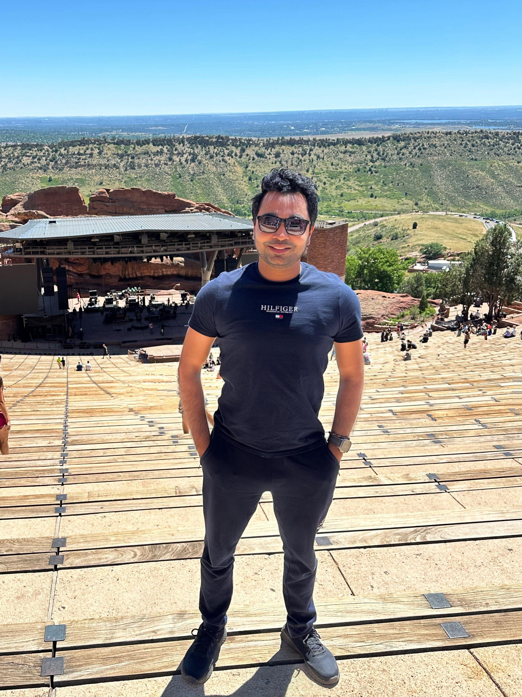

|
Himanshu Gupta
I am an Applied Scientist at Stores Foundation AI (San Francisco Bay Area), where I work on mid-training, post-training optimization, synthetic data creation and evaluation of large foundation models.
I developed robust FLOP-efficient methods for mid-training 800B ultra-sparse Mixture-of-Experts (MoE) models, significantly elevating performance in reasoning, math, and coding.
I have hands on experience with Megatron-LM, verl (SFT, DPO, GRPO), vLLM , SGLang and TRL .
I also had the opportunity to develop multi-lingual 7B foundation model from scratch at Krutrim which focused on 10 Indic languages (Media Coverage , Technical Report).
My thesis was on Sample efficiency of Instruction Tuned Models under the guidance of Dr. Swaroop Mishra and Prof. Chitta Baral.
Email /
CV /
Google Scholar /
X /
Linkedin
|

|
|
Research
My main research contributions are showcasing various aspects of Instruction Tuning (
Sample Efficiency,
Aspect Based Sentiment Analysis,
Long Sequence Medical Tasks,
Financial NER,
Variable Name Recovery with Decompiled Output,
Event Detection
),
Mathematical Benchmarking (
Numerical Feasibility,
Adversarial Math Word Problems,
Multimodal Mathematical Benchmarking,
Humanity's Last Exam
),
Synthetic Data Generation and
Efficient LLMs-as-a-Judge.
My recent research focuses on building large foundation models that excel at instruction following, adherence to detailed guidelines, and high-precision reasoning, with particular emphasis on enhancing mid-training corpora and RL-based post-training alignment.
|
|
Selected Papers
|
Explicit Reasoning Makes Better Judges: A Systematic Study on Accuracy, Efficiency, and Robustness
Pratik Jayarao, Himanshu Gupta, Neeraj Varshney, Chaitanya Dwivedi
NeurIPS 2025 Workshop on Efficient Reasoning
|
| |
PolyMATH: A Challenging Multi-modal Mathematical Reasoning Benchmark
Himanshu Gupta, Shreyas Verma, Ujjwala Anantheswaran, Kevin Scaria, Mihir Parmar,
Swaroop Mishra, Chitta Baral
NeurIPS FoRML Workshop 2025
|
| |
Krutrim LLM: Multilingual Foundational Model for over a Billion People
Aditya Kallappa....Arveti Manjunath, Himanshu Gupta... Chandra Khatri
preprint
|
| |
Humanity's Last Exam
Scale AI team, ....Chris Harjadi, Himanshu Gupta, Stephen Malina....
preprint
|
| |
Investigating the Robustness of LLMs on Math Word Problems
Ujjwala Anantheswaran, Himanshu Gupta, Kevin Scaria, Shreyas Verma, Chitta Baral,
Swaroop Mishra
Reasoning and Planning for LLMs @ ICLR 2025
|
| |
TarGEN: Targeted Data Generation with Large Language Models
Himanshu Gupta, Kevin Scaria, Ujjwala Anantheswaran, Shreyas Verma, Mihir Parmar,
Saurabh Arjun Sawant, Chitta Baral, Swaroop Mishra
COLM 2024
|
| |
EDM3: Event Detection as Multi-task Text Generation
Ujjwala Anantheswaran, Himanshu Gupta, Mihir Parmar, Kuntal Kumar Pal, Chitta Baral
SEM NAACL 2024
|
| |
InstructABSA: Instruction Learning for Aspect Based Sentiment
Analysis
Kevin Scaria, Himanshu Gupta, Siddharth Goyal, Saurabh Arjun Sawant, Swaroop Mishra,
Chitta Baral
NAACL 2024
|
| |
“Len or index or count, anything but v1”: Predicting Variable Names in Decompilation
Output with Transfer Learning
Kuntal Kumar Pal, Ati Priya Bajaj, Pratyay Banerjee, Audrey Dutcher, Mutsumi Nakamura, Zion
Leonahenahe Basque, Himanshu Gupta, Saurabh Arjun Sawant, Ujjwala Anantheswaran, Yan
Shoshitaishvili, Adam Doupé, Chitta Baral, Ruoyu Wang
IEEE S&P 2023
|
| |
A Unified Evaluation Framework for Novelty Detection and Accommodation in NLP with an
Instantiation in Authorship Attribution
Neeraj Varshney, Himanshu Gupta, Eric Robertson, Bing Liu, Chitta Baral
ACL 2023
|
| |
"John is 50 years old, can his son be 65?" Evaluating NLP Models' Understanding of
Feasibility
Himanshu Gupta, Neeraj Varshney, Swaroop Mishra, Kuntal Kumar Pal, Saurabh Arjun
Sawant, Kevin Scaria, Siddharth Goyal, Chitta Baral
EACL 2023
|
| |
Context-NER : Contextual Phrase Generation at Scale
Himanshu Gupta, Shreyas Verma, Santosh Mashetty, Swaroop Mishra
NeurIPS ENLSP Workshop 2022
|
| |
LongBoX: Evaluating Transformers on Long-Sequence Clinical Tasks
Mihir Parmar, Aakanksha Naik, Himanshu Gupta, Disha Agrawal, Chitta Baral
preprint
|
| |
Instruction Tuned Models are Quick Learners
Himanshu Gupta, Saurabh Arjun Sawant, Swaroop Mishra, Mutsumi Nakamura, Arindam Mitra,
Santosh Mashetty, Chitta Baral
preprint
|
| |
|
Please check my
google scholar page for all the papers.
|
|
Experience
- 12.2023 - present Applied Scientist at Amazon (Stores Foundation AI Team)
- 08.2023 - 11.2023 Founding Scientist Scientist at Krutrim
- 05.2023 - 07.2023 Internship at Amazon Alexa
- 01.2022 - 05.2023 Graduate Research Assistant at CogInt Labs, ASU with Dr. Chitta Baral
- 01.2019 - 12.2021 AI Researcher at American Express AI Labs. Supervised by Dr. Himanshu Shrad
Bhatt
- 01.2018 - 12.2018 Research Intern at Covenant University with Dr. Sanjay
Misra
- 01.2018 - 12.2018 Undergraduate Research Assistant at BITS Pilani with Dr. NL Bhanu Murthy
|
|
Honors and Awards
- 2024 - 2025 Served as a Reviewer for ICLR (2025, 2026) COLM 2025, NAACL 2024, ACL 2024, ACL ARR (April, June, August, October, December) 2024 and SDU@AAAI 2024.
- 2022 - 2023 Received Masters Graduate fellowship for Spring, Summer and Fall 2022 at Arizona State University. Also received Engineering Graduate Fellowship award for academic performance in Masters Study.
- 2022 - 2023 Project mentor and supervisor for 16 Students for CSE 576: Advanced topics in NLP. Responsible for Problem statement delivery, setting up research goals, clearing coding doubts for the project of the students. The Project was 50% of the entire coursework.
- 2022 - 2023 Involved in writing $6 Million grant to IARPA for Authorship Privacy Research for CogInt Labs.
- 2019 - 2021 Filed 3 patents in American Express.
- 2019 Secured World Rank 2 among 6000+ teams in HackHarvard Global 2019 Hackathon on the industry based education track. Was invited to Harvard University to present the project.
- 2014 Secured a rank of 901 among 1.4 million students PAN India to receive KVPY fellowship
|
|
|
{kind=link}